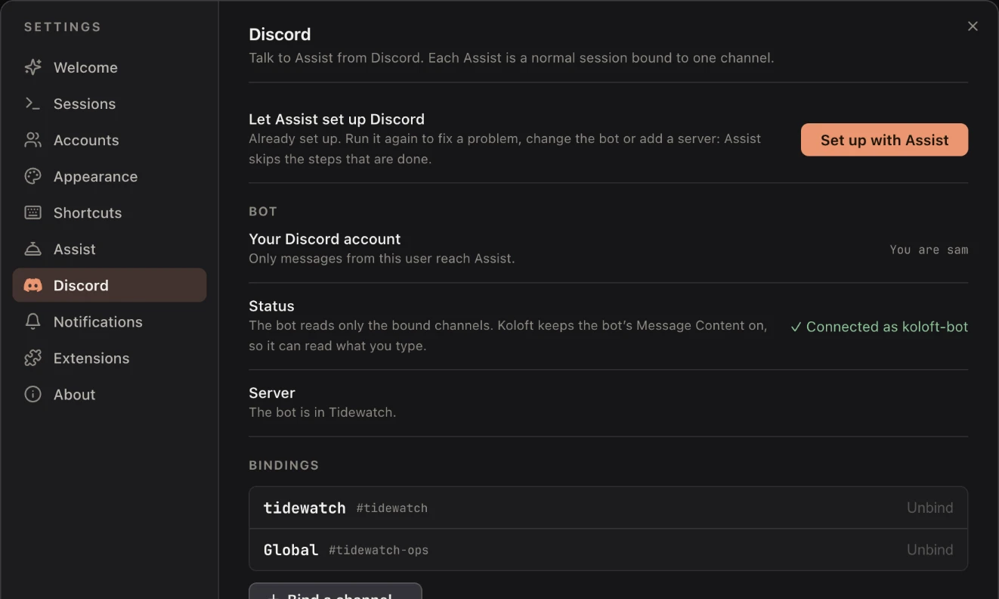
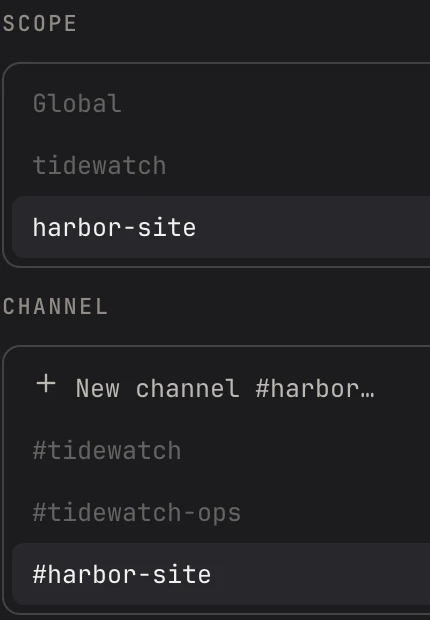
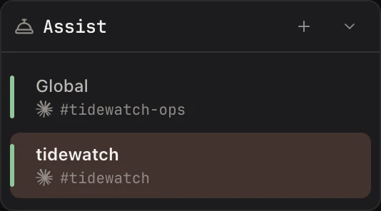

A butler on Discord
Discord is a chat app for your phone and your computer. Assist is Koloft's own AI: a Claude or Codex session on your Mac that you talk to from the sidebar. Give it a Discord channel (a chat room) and you can write to it from your phone too. It starts your other sessions, reads them, sends them messages, and answers their questions the way you tell it to. It never does the work itself: it cannot change your files, whatever your permission setting, so it passes each job on to a session.
your phone
+-----------------------------+
| the Discord app |
+-----------------------------+
^ |
| v
Discord, on the internet
+-----------------------------+
| your private server |
| one channel per Assist |
| one thread per session |
+-----------------------------+
^ |
| v
your Mac
+-----------------------------+
| Koloft, signed in as your |
| bot with the bot's token |
| | | |
| channel thread |
| v v |
| Assist ---> the session |
+-----------------------------+
Nothing runs on a server of ours, and you make no account with us. The words travel through your own private bot. A bot is an account that a program uses, not a person. You make it on Discord, and Koloft signs in as it. Until Koloft has the bot's token, nothing connects.
Set it up
Open Settings ▸ Discord and click Set up with Assist. Assist opens the
Discord website in its Workbench browser and does each step it can; you sign in, type your
password and pass the "I am human" checks. Already have a bot? Assist can use it too. The
steps Assist takes are:
- Make the app, on the Discord website. An app is Discord's box that holds a bot. Or pick the app you already have.
- Get the bot's token. The token is the bot's password. Koloft reads it from the page itself, so it never passes through Assist, and keeps it in the macOS Keychain (the Mac's locked box for passwords). Once the token is in, Koloft turns on Message Content (Discord's switch that lets a bot read what you type).
- Make a private server, if you have none. A server is your own space in Discord, with channels in it. Only you are in this one.
- Add the bot to your server. The invite asks for the rights the bot needs, making channels and Manage Threads among them.
- Bind Assist to a channel. Bind means tie the channel to Assist. Koloft makes #global in a category named after your bot, and a channel for each folder you pick.
Koloft also needs to know who you are. If the bot's app is yours alone, Koloft already knows: it is the app's owner. If a team owns the app, send any message in your server, like "hi". It shows up in Settings ▸ Discord with the sender's name. Click This is me (or Not me). After that, Settings ▸ Discord shows your Discord account ("Only messages from this user reach Assist."), the status ("The bot reads only the bound channels."), and your bindings. Click Set up with Assist again any time to fix a problem: Assist skips the steps that are done.

Bind a channel
A binding ties one channel to one Assist: Global, or one folder. The Global Assist looks after every folder in the sessions list. A folder's Assist looks after that folder only. Each folder binds one channel, and Global binds one. Which tool Assist runs on, Claude or Codex, is one setting for all of them: Settings ▸ Assist.

There are three ways in:
- Settings ▸ Discord ▸
Bind a channel… -
right-click a folder ▸
Bind Discord channel…(there while that folder has no channel) - the
+on the Assist block

The Assist block sits in the sidebar, under the sessions list and above Notes. It is always there, Discord or not: Global first, then each folder's Assist you have talked to or bound, then the tasks Assist is running for you. Under each Assist's name is its channel, or "not on Discord". With Assist off and nothing bound, it shows one grey Assist row; click it to set Assist up. Right-click an Assist there for a menu with:
- Open
- Change channel… (or Bind Discord channel…, when it has none)
- Start a fresh Assist
- Unbind Discord channel (only Discord goes; the Assist and its conversation stay)
Assist always runs on your Mac, even for a remote folder. It runs in a folder of its own under Koloft's data folder, not in your workspace. It opens as soon as Koloft connects to Discord, and it never goes to sleep the way an idle session does.
From your phone
#tidewatch (the channel)
❓ fix flaky test · needs you,
asked 2 minutes ago
tidewatch · Claude
|
+-- thread: fix flaky test
❓ fix flaky test is waiting
for you.
Bash asks to run:
npm test
Answer with a button, or
write the answer here.
[ Yes ] [ No ]
after you press Yes, the
buttons go, and it ends:
✅ Yes
Talk to Assist
Write in the bound channel. Your message reaches Assist with "[Discord]" in front. It gets a ⏳ while it waits its turn, and a ✅ once it is in. If Assist is not open, your first message starts it; the ⏳ stays until it is ready. Files you attach are saved on your Mac, and Assist is told where they are.
One thread per session
A thread is a side chat that hangs off one message. Each session Assist looks after gets its own. The channel shows one small card per session: its title, its folder, and Claude or Codex. Under that card, the session's thread holds its news: finished, waiting for you, closed, and the results of commands.
The card follows the session's light in the sidebar, and says how long ago that began:
| card | sidebar light |
|---|---|
| 🔄 working, started … | orange |
| ❓ needs you, asked … | amber, or green with a red dot |
| ✅ turn done … | green; with "· work still running" when things it started still run in the background |
| 💤 idle, done … | dim green |
| ⏹ closed … | grey |
| ⚪ status unknown | a Codex session whose state Koloft cannot read |
While a session works, its thread shows the bot typing; while Assist works, its channel does. For a session on another machine, the card is a few seconds behind, like the sidebar.
- Type in a thread, and it goes straight to that session. If the session is asking you something, your message is the answer.
-
The thread takes the session's title from the sidebar, and changes when the title does.
After
/clear, the session stays in the same thread. - When the session's tab closes, its thread is put away (archived). A session going to sleep is not a close.
-
When the session leaves the sidebar (Remove from list,
/exit, orkoloft session close), its thread and its card are deleted. If the bot may not delete threads, Koloft archives it instead and a small message asks you to give the bot Manage Threads (step 5 above). This is the same for every kind of session.
Buttons
When a session asks you something, its card has buttons:
- a question with one pick: "1. …", "2. …", one button per option
- a request to run a tool: Yes / No
- a plan: Approve / Reject
After you press one, the card says "✅" and the label you pressed. A question with several parts gets no buttons. See which sessions can take a typed answer below.
Slash commands
A slash command is a command you type that starts with /. Discord shows three
once a channel is bound in your server:
-
/run— type a command into a session, like/contextor/model haiku /clear— start a new conversation in a session/compact— shrink a session's conversation; you may say what to keep
Each has a session box that fills itself in as you type. Leave it out and the command goes
to Assist, or, inside a thread, to that thread's session. A plain message that starts with
/ runs where you typed it: in the channel, in Assist; in a thread, in that
thread's session. A command waits until Assist's turn ends, for up to 10 minutes.
Files out
Assist can send you files. It runs
koloft discord send <file>... -- "<text>" with each file's full
path, and the text part may be left out. Each file can be up to 20 MB (megabytes). Discord
takes 10 files and 25 MB per message, so a bigger batch goes out as several messages.
What Assist can do
It works through the koloft command, plus a few verbs only Assist gets. In its folder, or in every folder for Global, it can:
- start, read, message, resume and stop sessions
- run a slash command in them, and see their screen
- answer their questions, and press keys in them as you would at the Mac: pick an option, move through a menu, approve, refuse or cancel. Tell it what to pick and it does it, instead of sending you to the Mac
- close the sessions it started
- close any ended session it looks after on your Mac, when you ask
- list your folders (Global only)
-
check GitHub itself with
koloft gh: is a pull request merged, how did its checks go, what does an issue say; and open an issue when you ask for one (Koloft runsgh, GitHub's command-line tool, for it: the reading commands pr view, list, checks, diff; issue view, list; run view, list; and issue create, with a title, a body and labels only. A folder's Assist gets that folder's repository filled in; the Global one names it with--repo) - keep its own memory (a Claude Assist may write in its own memory folder, and nowhere else)
It cannot:
- change your files, take a screenshot or drive a browser itself (a Claude Assist is told no, with a message; a Codex Assist is held in its sandbox, a box it cannot reach out of; either one asks a session to do it)
-
merge, comment on, close or edit anything on GitHub
(
koloft ghrefuses every command that writes, except opening an issue) - close an open session it did not start (stop it first)
- close a session on another machine (Koloft cannot check what closing it there would lose)
- touch scheduled jobs or notes, if it is the Global Assist or a remote folder's (a local folder's Assist can)
A Claude session Assist starts follows your Skip permission prompts setting (Settings ▸ Accounts), like any Claude session. A Codex session it starts runs with no approvals and no sandbox if a Claude Assist started it with that setting on; otherwise it starts the ordinary way, like one you start yourself.
A message you send while Koloft is closed gets one answer: "Koloft was offline, this message was not delivered."
What Discord sees
Everything goes to Discord, at discord.com/api/v10 and
gateway.discord.gg, and files you attach come down from Discord's file
server. This is the text that leaves your Mac:
| what | what is in it |
|---|---|
| Assist replies | Every reply Assist writes, whole, and its own question cards. |
| "finished" card | The session's full reply for that turn, if it arrives within 7 seconds; otherwise the card has no reply. |
| "waiting" card | The question and its options. For an approval: the command it wants to run, the plan, or for any other tool its whole input. So for an Edit or a Write, that is the file's text. |
| "closed" card | Only the session's name. |
| command results |
What /run, /clear or /compact printed, and
the reply after it.
|
| session cards | The session's title and folder (also in thread names), Claude or Codex, and its state (see the table above), edited each time the state changes. While it works, a typing signal every 8 seconds. |
| errors | A short note when something goes wrong. |
Long text is split into several messages, not cut short. Only a button label or a thread name gets cut.
- Never the whole transcript (the written record of a session): only what the cards above carry, and what Assist writes.
- Only your account, the one Settings ▸ Discord shows, is heard. Other people and bots are ignored, and their commands and button presses refused.
- Discord still sends every message in the server to your Mac. Koloft drops the rest there, and none of it goes back out.
- Koloft finds you by itself when the bot's app is yours. When a Discord team owns the app instead, Koloft cannot tell who you are: until you pick yourself, the last message anyone wrote in the server shows up in Settings ▸ Discord, so you can say it is you or not.
- "Waiting" and "closed" cards go out for every session in a bound folder (every folder, under Global), not only Assist's.
- A "finished" card goes out once Assist has touched that session, or once the session has a thread.
- The token signs the bot in before you bind a channel. Until you bind one, it ignores messages and shows no slash commands.
Three kinds of session
Claude on your Mac
- Every kind of question can be answered from your phone.
- A question with several parts has no buttons. Reply in the thread with one line per question: a number, or your own answer.
- For a plan, you can also type what to change instead of yes.
Codex on your Mac
- Your messages wait in line, and go in when Codex is ready.
- Yes / No works, and so does one question that picks one option.
- Anything else, like several parts, free text or a secret, gets "Codex is asking something Koloft cannot answer from here: it answers a yes-or-no approval, or one question that picks one option from a list. Assist can still answer this one by pressing its keys." So tell Assist what to pick.
-
What Codex shows only on its screen is not read back. Assist can look with
koloft session screen.
Claude on another machine
- Koloft answers by typing keys into its terminal. So it can answer Yes / No, or one question with one pick. A question with several parts, or with several picks, gets no buttons: tell Assist what to pick.
- A plan takes yes or no only.
- A file you attach is left out, and the session is told why: "this session runs on another machine". Your words still go in.
- What Assist sends it waits until the session's turn ends. What you type in its thread goes in at once.
There is no fourth kind: Codex does not run on another machine.
What it won't do
-
post your whole transcript(one turn's reply and one tool's input do go out, as the cards above say) -
ring on start, close or a new state(the "started" and "closed" cards, and every edit of a session's card, are silent) -
answer Codex forms from a thread(several parts, free text or secrets: tell Assist what to pick instead) -
run two Kolofts on one data folder(the second one waits for the bot; a Koloft on another Mac with the same token is not stopped, and both get every message) -
rename threads quickly(Discord's rule: two name changes in ten minutes)
next page -> Install, update, what it talks to